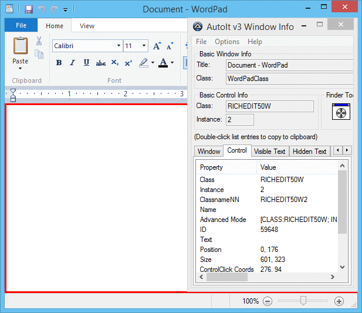

В состав AutoIt v3 входит отдельный инструмент AutoIt Window Info Tool (Program Files\AutoIt3\Au3Info.exe). Au3Info позволяет получать информацию о выбранном окне, чтобы эффективнее его автоматизировать. Можно получить:
Чтобы использовать Au3Info, просто запустите его (из командной строки или меню "Пуск"). Au3Info всегда остаётся поверх остальных окон, чтобы вы могли его видеть. После запуска переключитесь на интересующее вас окно – содержимое Au3Info обновится и покажет доступную информацию. С Au3Info вы быстро освоите автоматизацию!
Когда Au3Info запущен, удобно копировать текст напрямую через CTRL-C и вставлять в скрипт – так избежите ошибок в орфографии или регистре. Для вкладок со списком (как в окне информации о контроле) дважды щёлкните по записи – она скопируется в буфер обмена. Это бывает сложно при захвате информации о пикселях/мыши, поскольку она постоянно меняется! Помогает "заморозка" вывода Au3Info по сочетанию CTRL-ALT-F. Повторное нажатие "размораживает" вывод.
Пример использования Au3Info с редактором WordPad:
